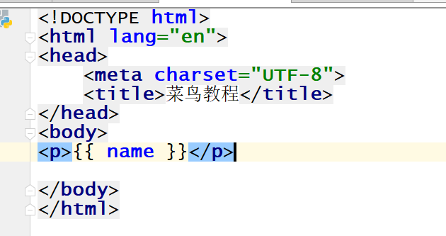
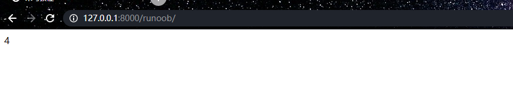
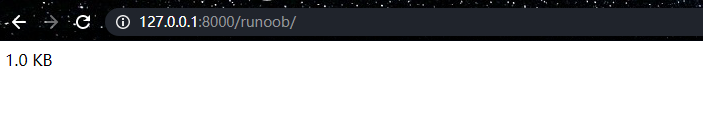
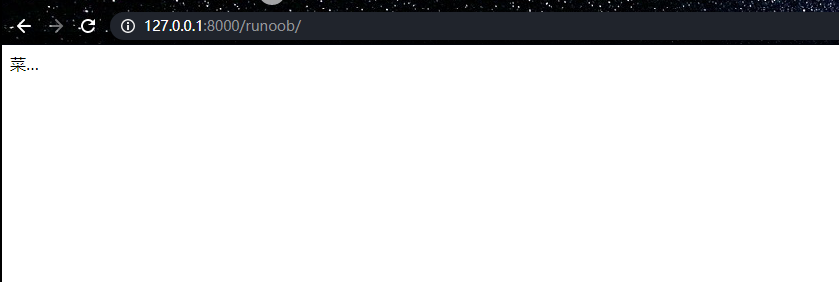
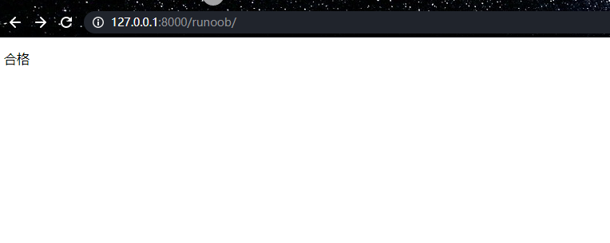
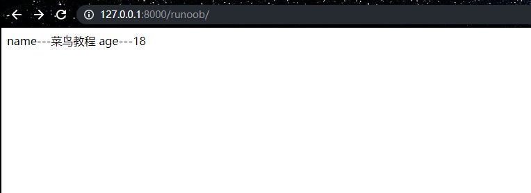
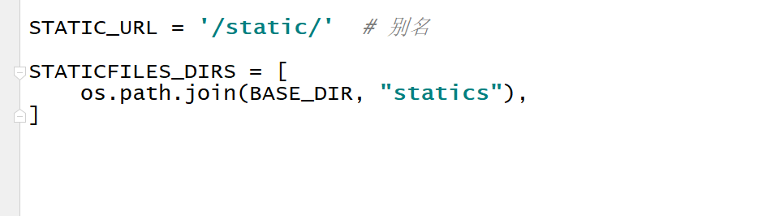

Django テンプレート
Django のテンプレートシステム（Template System）は、ビジネスロジック（Python）とプレゼンテーション層（HTML）を分離するための中心的なコンポーネントです。開発者はシンプルなタグと変数を使用して HTML ページを動的に生成できます。
前の章では、私たちはdjango.http.HttpResponse()を使用して出力しました"Hello World！"、この方法はデータとビューを混在させており、Django の MVT の考え方に適合しません。
この章では、Django テンプレートの応用について詳しく紹介します。テンプレートは、ドキュメントの表現形式と内容を分離するためのテキストです。
| 機能 | 構文/例 | 適用シーン |
|---|---|---|
| 変数のレンダリング | {{ variable }} | データを動的に表示する |
| ロジック制御 | {% if %}, {% for %} | 条件/ループレンダリング |
| テンプレート継承 | {% extends %}, {% block %} | 重複する HTML 構造を避ける |
| 静的ファイル | {% static 'path' %} | CSS/JS/画像を読み込む |
| カスタムフィルタ | @register.filter | テンプレート機能を拡張する |
テンプレート応用例
前の章のプロジェクトに続いて、HelloWorld ディレクトリの下に templates ディレクトリを作成し、サンプル.html ファイルを作成します。ディレクトリ構造全体は次のとおりです。
HelloWorld/
|-- HelloWorld
| |-- __init__.py
| |-- __init__.pyc
| |-- settings.py
| |-- settings.pyc
| |-- urls.py
| |-- urls.pyc
| |-- views.py
| |-- views.pyc
| |-- wsgi.py
| `-- wsgi.pyc
|-- manage.py
`-- templates
`-- サンプル.html
サンプル.html ファイルのコードは次のとおりです。
HelloWorld/templates/サンプル.html ファイルコード：
テンプレートから、変数が二重括弧を使用していることがわかります。{{ }}。
次に、Django にテンプレートファイルのパスを指定する必要があります。HelloWorld/HelloWorld/settings.py ファイルを開き、修正しますTEMPLATESの中のDIRSために[BASE_DIR / "templates"]、次のようにします。
HelloWorld/HelloWorld/settings.py ファイルコード：
TEMPLATES = [
{
'BACKEND': 'django.template.backends.django.DjangoTemplates',
'DIRS': [BASE_DIR / "templates"], # 変更位置
'APP_DIRS': True,
'OPTIONS': {
'context_processors': [
'django.template.context_processors.debug',
'django.template.context_processors.request',
'django.contrib.auth.context_processors.auth',
'django.contrib.messages.context_processors.messages',
],
},
},
]
...
views.py を変更し、テンプレートにデータを渡すための新しいオブジェクトを追加します。
HelloWorld/HelloWorld/views.py ファイルコード：
ご覧のとおり、ここでは以前使用した HttpResponse の代わりに render を使用しています。render は辞書 context を引数としても使用します。
context 辞書内の要素のキーhelloはテンプレート内の変数に対応します。{{ hello }}。
HelloWorld/HelloWorld/urls.py ファイルコード：
次に、HelloWorld ディレクトリに入り、以下のコマンドを入力してサーバーを起動します。
python3 manage.py runserver 0.0.0.0:8000
再度アクセスしますhttp://127.0.0.1:8000/サンプル、ページが表示されます。

これで、テンプレートを使用してデータを出力し、データとビューの分離を実現しました。
次に、テンプレートでよく使われる構文規則について具体的に説明します。
Django テンプレートタグ
構文：
{% tag %}
テンプレートのロジックを制御する、よく使われるタグ：
| タグ | 用途 |
|---|---|
{% for %} | リスト/辞書をループで走査する |
{% if %} | 条件分岐 |
{% extends %} | 基本テンプレートを継承する |
{% block %} | 子テンプレートでオーバーライド可能なコンテンツブロックを定義する |
{% include %} | 他のテンプレート片を埋め込む |
{% url %} | URL を逆解析する（ハードコーディングされたパスを避ける） |
{% csrf_token %} | CSRF トークンを生成する（POST フォーム用） |
変数
テンプレート構文：
view：｛"HTML变量名" : "views变量名"｝ HTML：｛｛变量名｝｝
HelloWorld/HelloWorld/views.py ファイルコード：
def サンプル(request):
views_name = "サンプル"
return render(request,"サンプル.html", {"name":views_name})
templates 内の サンプル.html：
<p>{{ name }}</p>

再度 http://127.0.0.1:8000/サンプル にアクセスすると、ページが表示されます。

リスト
templates 内の サンプル.html では、使用できます.インデックス（添え字）で対応する要素を取り出します。
HelloWorld/HelloWorld/views.py ファイルコード：
def サンプル(request):
views_list = ["サンプル1","サンプル2","サンプル3"]
return render(request, "サンプル.html", {"views_list": views_list})
HelloWorld/templates/サンプル.html ファイルコード：
再度 http://127.0.0.1:8000/サンプル にアクセスすると、次のページが表示されます：

辞書
templates 内の サンプル.html では、次を使用できます.キー対応する値を取り出します。
HelloWorld/HelloWorld/views.py ファイルコード：
def サンプル(request):
views_dict = {"name":"サンプル"}
return render(request, "サンプル.html", {"views_dict": views_dict})
HelloWorld/templates/サンプル.html ファイルコード：
再度 http://127.0.0.1:8000/サンプル にアクセスすると、次のページが表示されます：

フィルタ
テンプレート構文：{{ 変数名 | フィルター：オプション引数 }}
テンプレートフィルターは、変数が表示される前に変数を修正できます。フィルターはパイプ文字を使用します。以下に示します：
{{ name|lower }}
{{ name }} 変数がフィルター lower で処理されると、大文字が自動的に小文字に変換されます。
フィルターパイプは*ネスト*できます。つまり、あるフィルターパイプの出力を次のパイプの入力にすることができます。
{{ my_list|first|upper }}
上記の例では、最初の要素を取得して大文字に変換します。
一部のフィルターにはパラメーターがあります。フィルターのパラメーターはコロンの後に続き、常に二重引用符で囲まれます。例：
{{ bio|truncatewords:"30" }}
これは変数 bio の最初の30語を表示します。
他のフィルター：
- addslashes : 任意のバックスラッシュ、単一引用符、二重引用符の前にバックスラッシュを追加します。
- date : 指定されたフォーマット文字列パラメータに従って date または datetime オブジェクトをフォーマットします。例：
{{ pub_date|date:"F j, Y" }} - length : 変数の長さを返します。
default
default は変数にデフォルト値を提供します。
views から渡された変数のブール値が false の場合、指定されたデフォルト値を使用します。
次の値は false です：
0 0.0 False 0j "" [] () set() {} None
HelloWorld/HelloWorld/views.py ファイルコード：
def サンプル(request):
name =0
return render(request, "サンプル.html", {"name": name})
HelloWorld/templates/サンプル.html ファイルコード：
再度 http://127.0.0.1:8000/サンプル にアクセスすると、次のページが表示されます：

length
オブジェクトの長さを返します。文字列とリストに適用されます。
辞書はキーと値のペアの数を返し、集合は重複を除去した後の長さを返します。
HelloWorld/HelloWorld/views.py ファイルコード：
def サンプル(request):
name ="サンプル"
return render(request, "サンプル.html", {"name": name})
HelloWorld/templates/サンプル.html ファイルコード：
再度 http://127.0.0.1:8000/サンプル にアクセスすると、次のページが表示されます：

filesizeformat
ファイルサイズをより読みやすい方法で表示します（例：'13 KB', '4.1 MB', '102 bytes' など）。
辞書はキーと値のペアの数を返し、集合は重複を除去した後の長さを返します。
HelloWorld/HelloWorld/views.py ファイルコード：
def サンプル(request):
num=1024
return render(request, "サンプル.html", {"num": num})
HelloWorld/templates/サンプル.html ファイルコード：
再度 http://127.0.0.1:8000/サンプル にアクセスすると、次のページが表示されます：

date
指定された形式に従って日付変数をフォーマットします。
フォーマットY-m-d H:i:s戻り値年-月-日 時:分:秒の形式の時間。
HelloWorld/HelloWorld/views.py ファイルコード：
def サンプル(request):
import datetime
now =datetime.datetime.now()
return render(request, "サンプル.html", {"time": now})
HelloWorld/templates/サンプル.html ファイルコード：
再度 http://127.0.0.1:8000/サンプル にアクセスすると、次のページが表示されます：

truncatechars
文字列に含まれる文字の総数が指定された文字数より多い場合、後ろの部分が切り捨てられます。
切り捨てられた文字列は、...で終わります。
HelloWorld/HelloWorld/views.py ファイルコード：
def サンプル(request):
views_str = "サンプル"
return render(request, "サンプル.html", {"views_str": views_str})
HelloWorld/templates/サンプル.html ファイルコード：
再度 http://127.0.0.1:8000/サンプル にアクセスすると、次のページが表示されます：

safe
文字列を安全としてマークし、エスケープする必要がありません。
views.py から渡されたデータが絶対に安全であることを保証して初めて safe を使用できます。
バックエンドの views.py の mark_safe と同じ効果です。
Django は views.py から HTML ファイルに渡されたタグ構文を自動的にエスケープし、その意味を無効にします。safe フィルターを追加すると、Django にそのデータが安全であり、エスケープする必要がないことを伝え、そのデータの意味を有効にすることができます。
HelloWorld/HelloWorld/views.py ファイルコード：
def サンプル(request):
views_str = "<a href='/index.html'>点击跳转</a>"
return render(request, "サンプル.html", {"views_str": views_str})
HelloWorld/templates/サンプル.html ファイルコード：
再度 http://127.0.0.1:8000/サンプル にアクセスすると、次のページが表示されます：

if/else タグ
基本構文は次のとおりです：
{% if condition %}
... display
{% endif %}
または：
{% if condition1 %}
... display 1
{% elif condition2 %}
... display 2
{% else %}
... display 3
{% endif %}
条件に応じて出力するかどうかを判断します。if/else はネストをサポートします。
{% if %} タグは and、or、または not キーワードを使用して複数の変数を判断したり、変数を否定（not）したりできます。例：
{% if athlete_list and coach_list %}
athletes 和 coaches 变量都是可用的。
{% endif %}
HelloWorld/HelloWorld/views.py ファイルコード：
def サンプル(request):
views_num = 88
return render(request, "サンプル.html", {"num": views_num})
HelloWorld/templates/サンプル.html ファイルコード：
再度 http://127.0.0.1:8000/サンプル にアクセスすると、次のページが表示されます：

for タグ
{% for %} を使用すると、シーケンス上で反復処理ができます。
Python の for 文の状況と同様に、ループ構文は for X in Y です。Y は反復処理するシーケンスで、X は各特定のループで使用される変数名です。
各ループで、テンプレートシステムは{% for %}と{% endfor %}の間のすべての内容をレンダリングします。
たとえば、アスリートのリスト athlete_list 変数が与えられた場合、次のコードを使用してこのリストを表示できます：
<ul>
{% for athlete in athlete_list %}
<li>{{ athlete.name }}</li>
{% endfor %}
</ul>
HelloWorld/HelloWorld/views.py ファイルコード：
def サンプル(request):
views_list = ["サンプル","サンプル1","サンプル2","サンプル3",]
return render(request, "サンプル.html", {"views_list": views_list})
HelloWorld/templates/サンプル.html ファイルコード：
再度 http://127.0.0.1:8000/サンプル にアクセスすると、次のページが表示されます：

タグに reversed を追加すると、リストが逆方向に反復処理されます：
{% for athlete in athlete_list reversed %}
...
{% endfor %}
HelloWorld/templates/サンプル.html ファイルコード：
再度 http://127.0.0.1:8000/サンプル にアクセスすると、次のページが表示されます：

辞書の反復処理: 辞書を直接使用できます.itemsメソッド、変数のアンパックを使用してキーと値をそれぞれ取得します。
HelloWorld/HelloWorld/views.py ファイルコード：
def サンプル(request):
views_dict = {"name":"サンプル","age":18}
return render(request, "サンプル.html", {"views_dict": views_dict})
HelloWorld/templates/サンプル.html ファイルコード：
再度 http://127.0.0.1:8000/サンプル にアクセスすると、次のページが表示されます：

{% for %} タグ内では、{{ forloop }} 変数を使用してループ番号を取得できます。- forloop.counter: 順にループ番号を取得します。1 から数えます
- forloop.counter0: 順にループ番号を取得します。0 から数えます
- forloop.revcounter: 逆順にループ番号を取得します。末尾の番号は 1 です
- forloop.revcounter0: 逆順にループ番号を取得します。末尾の番号は 0 です
- forloop.first（通常は if タグと組み合わせて使用）: 最初のデータは True を返し、その他のデータは False を返します
- forloop.last（通常は if タグと組み合わせて使用）：最後のデータは True を返し、他のデータは False を返します。
HelloWorld/HelloWorld/views.py ファイルコード：
def サンプル(request):
views_list = ["a", "b", "c", "d", "e"]
return render(request, "サンプル.html", {"listvar": views_list})
HelloWorld/templates/サンプル.html ファイルコード：
再度 http://127.0.0.1:8000/サンプル にアクセスすると、ページが表示されます：

{% empty %}
オプションの {% empty %} 句：ループが空のときに実行されます（つまり in の後のパラメータのブール値が False の場合）。
HelloWorld/HelloWorld/views.py ファイルコード：
def サンプル(request):
views_list = []
return render(request, "サンプル.html", {"listvar": views_list})
HelloWorld/templates/サンプル.html ファイルコード：
再度 http://127.0.0.1:8000/サンプル にアクセスすると、ページが表示されます：

{% for %} タグはネストして使用できます：
{% for athlete in athlete_list %}
<h1>{{ athlete.name }}</h1>
<ul>
{% for sport in athlete.sports_played %}
<li>{{ sport }}</li>
{% endfor %}
</ul>
{% endfor %}
コメントタグ
Django のコメントは {# #} を使用します。
{# これはコメントです #}
include タグ
{% include %} タグは、テンプレート内に他のテンプレートのコンテンツを含めることを許可します。
以下の例はすべて nav.html テンプレートを含みます：
{% include "nav.html" %}
csrf_token
csrf_token は form フォームで使用され、クロスサイトリクエストフォージェリ保護の役割を果たします。
使用しない場合{% csrf_token %}タグを使用しないと、form フォームを使用する際にページを再度リダイレクトしようとすると 403 権限エラーが発生します。
使用すると{% csrf_token %}タグを使用すると、form フォームでデータを送信するときに初めて成功します。
解説：
まず、サーバーにリクエストを送信してログインページを取得します。このとき、ミドルウェア csrf は自動的に隠し input タグを生成します。このタグの value 属性の値はランダムな文字列です。ユーザーはログインページを取得すると同時に、この隠し input タグも取得します。
次に、ユーザーが form フォームでデータを送信する必要があるとき、この input タグを一緒にミドルウェア csrf に送信します。なぜなら、form フォームがデータを送信するとき、すべての input タグが含まれるからです。ミドルウェア csrf はデータを受信すると、このランダム文字列が最初にユーザーに送信したものかどうかを判断します。もしそうならデータ送信は成功し、そうでなければ 403 権限エラーを返します。
カスタムタグとフィルタ
1、アプリケーションディレクトリに作成するtemplatetagsディレクトリ（templates ディレクトリと同じ階層、ディレクトリ名は templatetags のみ）。
HelloWorld/ |-- HelloWorld | |-- __init__.py | |-- __init__.pyc | |-- settings.py ... |-- manage.py `-- templatetags `-- templates
2、templatetags ディレクトリ内に任意の py ファイルを作成します。例：my_tags.py。
3、my_tags.py ファイルのコードは以下の通りです：
from django import template register = template.Library() #register的名字是固定的,不可改变
settings.py ファイルの TEMPLATES オプション設定を変更し、libraries 設定を追加します：
settings.py 設定ファイル
TEMPLATES = [
{
'BACKEND': 'django.template.backends.django.DjangoTemplates',
'DIRS': [BASE_DIR, "/templates",],
'APP_DIRS': True,
'OPTIONS': {
'context_processors': [
'django.template.context_processors.debug',
'django.template.context_processors.request',
'django.contrib.auth.context_processors.auth',
'django.contrib.messages.context_processors.messages',
],
"libraries":{ # ここに3行の設定を追加
'my_tags':'templatetags.my_tags' # ここに3行の設定を追加
} # ここに3行の設定を追加
},
},
]
...
4、デコレータ @register.filter を使用してカスタムフィルターを定義します。
注意：デコレータのパラメータは最大 2 つまでです。
@register.filter
def my_filter(v1, v2):
return v1 * v2
5、デコレータ @register.simple_tag を使用してカスタムタグを定義します。
@register.simple_tag
def my_tag1(v1, v2, v3):
return v1 * v2 * v3
6、カスタムタグとフィルターを使用する前に、HTML ファイルの body の最上部でその py ファイルをインポートします。
{% load my_tags %}7、HTML でカスタムフィルターを使用します。
{{ 11|my_filter:22 }}
8、HTML でカスタムタグを使用します。
{% my_tag1 11 22 33 %}
9、セマンティックタグ
その py ファイルで mark_safe をインポートします。
from django.utils.safestring import mark_safe
タグを定義するとき、mark_safe メソッドを使用してタグをセマンティックにします。これは jQuery の html() メソッドに相当します。
フロントエンドの HTML ファイル内のフィルター safe と同じ効果です。
@register.simple_tag
def my_html(v1, v2):
temp_html = "<input type='text' id='%s' class='%s' />" %(v1, v2)
return mark_safe(temp_html)
HTML でこのカスタムタグを使用して、ページ内で動的にタグを作成します。
{% my_html "zzz" "xxx" %}
静的ファイルの設定
1、プロジェクトのルートディレクトリに statics ディレクトリを作成します。

2、settings ファイルの最下部に以下の設定を追加します：
STATIC_URL = '/static/' # 别名
STATICFILES_DIRS = [
os.path.join(BASE_DIR, "statics"),
]
3、statics ディレクトリ内に css ディレクトリ、js ディレクトリ、images ディレクトリ、plugins ディレクトリを作成し、それぞれ css ファイル、js ファイル、画像、プラグインを配置します。
4、bootstrap フレームワークをプラグインディレクトリ plugins に配置します。
5、HTML ファイルの head タグ内に bootstrap を導入します。
注意：このとき、参照パスでは設定ファイル内のエイリアス static を使用する必要があり、ディレクトリ statics ではありません。
<link rel="stylesheet" href="../static/plugins/bootstrap-3.3.7/dist/css/bootstrap.css.html">
テンプレートで使用するには、次を追加する必要があります{% load static %}コード。以下の例では、静的ディレクトリから画像を導入します。
HelloWorld/HelloWorld/views.py ファイルコード：
def サンプル(request):
name ="サンプル"
return render(request, "サンプル.html", {"name": name})
HelloWorld/templates/サンプル.html ファイルコード：
再度 http://127.0.0.1:8000/サンプル にアクセスすると、ページが表示されます：

テンプレート継承
テンプレートは継承方式で再利用を実現でき、冗長なコンテンツを減らせます。
Webページのヘッダーとフッターの内容は通常一貫しているため、テンプレート継承によって再利用を実現できます。
親テンプレートは再利用可能なコンテンツを配置するために使用され、子テンプレートは親テンプレートのコンテンツを継承し、自身のコンテンツを配置します。
親テンプレート
タグ block...endblock：親テンプレート内の予約領域です。この領域は子テンプレートが差異のあるコンテンツを埋めるために残されており、異なる予約領域の名前は同じにできません。
{% block 名称 %}
预留给子模板的区域，可以设置设置默认内容
{% endblock 名称 %}
子テンプレート
子テンプレートはタグ extends を使用して親テンプレートを継承します：
{% extends "父模板路径"%}
子テンプレートが親テンプレートの予約領域のコンテンツを設定しない場合、親テンプレートで設定されたデフォルトコンテンツが使用されます。もちろん、どちらも設定しなければ空になります。
子テンプレートが親テンプレートの予約領域のコンテンツを設定する：
{ % block 名称 % }
内容
{% endblock 名称 %}
次に、先ほどのプロジェクトの templates ディレクトリに base.html ファイルを作成します。コードは以下の通りです：
HelloWorld/templates/base.html ファイルコード：
上記のコードでは、mainbody という名前の block タグは、継承側によって置き換え可能な部分です。
すべての {% block %} タグはテンプレートエンジンに、子テンプレートがこれらの部分をオーバーライドできることを伝えます。
サンプル.html は base.html を継承し、特定の block を置き換えます。修正後の サンプル.html のコードは以下の通りです：
HelloWorld/templates/サンプル.html ファイルコード：
最初の行のコードは、サンプル.html が base.html ファイルを継承していることを示しています。ここで、同じ名前の block タグが base.html の対応する block を置き換えるために使用されていることがわかります。
再度 http://127.0.0.1:8000/サンプル にアクセスすると、出力結果は以下の通りです：